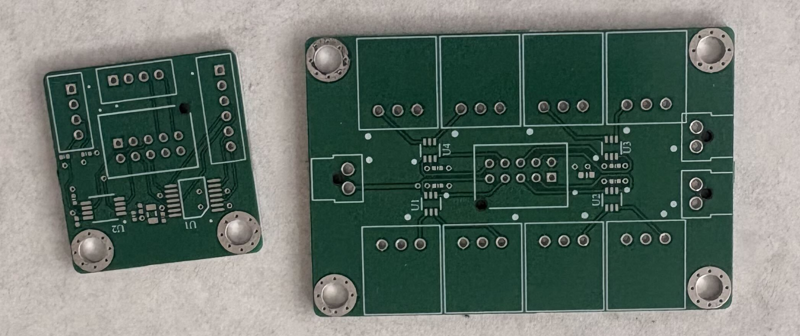

The Payload motherboard collects data, and the microcontroller tells the servo and motors how to control the payload's descent based on the data collected. Therefore, signal integrity on both to and from the motherboard is critical, since signals degrade over distance and vibrations, and buffers are needed to filter the signals.
Problem: Noisy PWM signals from the payload motherboard affecting servo and motor performance
Solution: Designed a dedicated buffer board with NC7WZ16 to filter signals before they reach the motors and servos
--My Role--
- Schematic design in Altium Designer
- Component selection
- NC7WZ16 is cheaper and easier to use (push-pull)
- PCB layout for signal integrity and manufacturability while considering space limitations
- Update PCB design according to updates in power distribution board
--Design Considerations--
- Power for chip
- Power for servo/motors also have to go through the board
- Output pins must provide GND, filtered signal, and power for motor/servos
Problem: Data buses also get noisy, affecting data sent to the motherboard
Solution: Designed a dedicated connector and buffer board with SN74LVC126A and TCA4307 to filter signals before they reach the motors and servos
--My Role--
- Schematic design in Altium Designer
- Component selection
- TCA4307 for I2C as it can be hot-swapped, allowing room for error
- SN74LVC126A generic buffer for SPI
- Considered adding bi-directional buffers for UART, but did not due to the added complexity needed from the motherboard
- PCB layout for signal integrity and manufacturability while minimizing boardsize
--Design Considerations--
- Power for chip
- Output pins must provide GND, filtered signal, and ease of integration with existing systems

Image 1: unsoldered boards after manufacturing, Connector Board on the left, buffer board on the right